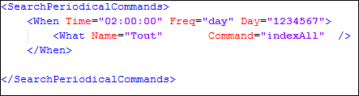

Les indexations périodiques permettent de programmer des indexations par lot à intervalle de temps réguliers. Le fichier paramètres Search_Scheduler.xml contient la liste des indexations à réaliser.
Le fichier des paramètres indique la périodicité ( quand par la balise <when>) et ce qu'il faut faire ( quoi par balise <what>)
Les balises <When> permettent de définir l’heure, la fréquence et les jours de la semaine (1=dimanche) de l’action.
Les sous-balises <What> permettent d’indiquer ce qu’il faut faire :
Indexer un document
Indexer un dictionnaire de documents
Indexer tous les documents
Effacer tous les index et indexer tous les documents
Console
Les indexations périodiques à venir s'affiche dans la console d'administration d'un serveur Search.. La suppression d'une indexation dans le tableau supprime la prochaine occurrence de l'action. Elle est remplacée par l'occurrence suivante. Ceci permet par exemple de "sauter" l'indexation prévue ce soir.
Relire le fichier paramètre des indexations périodiques
Ce choix doit être lancé en cas de modification du fichier paramètre Search_Scheduler.xml afin que les modifications soient prises en compte.
Exemple
